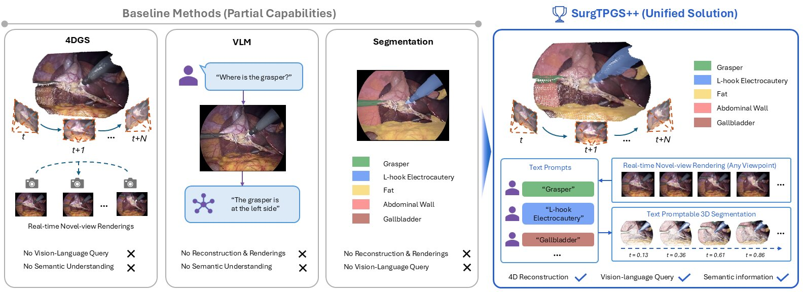
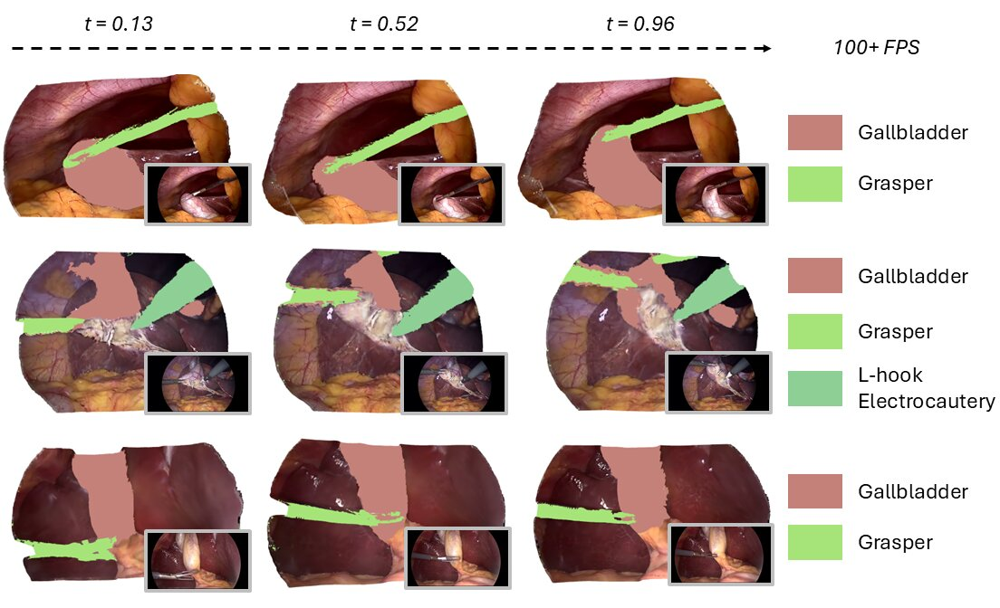
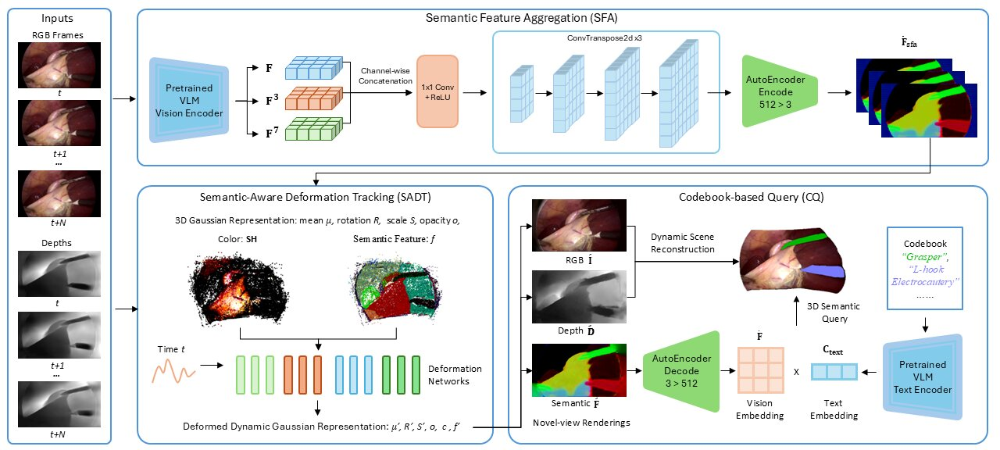
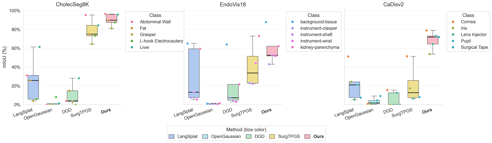
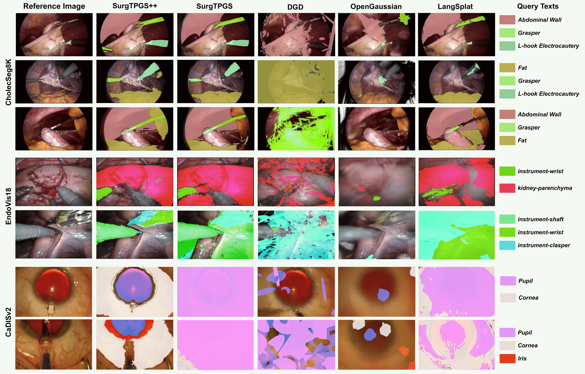

SurgTPGS++: Text-Promptable Gaussian Splatting with Dense Features Aggregation for Semantic 4D Surgical Scene Understanding
A unified Gaussian Splatting framework for dynamic 4D reconstruction, real-time language-assisted 3D querying, and semantic segmentation in surgical scenes.

Abstract
With the growing demand for surgical embodied intelligence, accurate semantic understanding of 3D surgical scenes with language-based interaction has become increasingly important. Such capability can assist surgeons in identifying and interacting with surgical instruments and anatomical structures during pre-operative planning and real-time intra-operative guidance. However, existing methods typically address surgical vision-language modeling, 3D reconstruction, and semantic segmentation as separate tasks, leaving real-time language-assisted 3D querying in dynamic surgical scenes largely unexplored.
We present SurgTPGS++, a Gaussian Splatting pipeline for text-promptable 3D surgical scene understanding. SurgTPGS++ introduces semantic feature aggregation (SFA) to extract and integrate rich vision-language features from multi-domain VLMs, embeds the aggregated features into semantic-aware 3D Gaussians, and applies semantic-aware deformation tracking (SADT) to model temporal deformation of both texture and semantic features. A codebook-based query (CQ) module then matches rendered semantic features with text-codebook embeddings, enabling real-time language-assisted 3D segmentation from arbitrary viewpoints and timestamps.
Highlights
Unified Surgical 4D Understanding
SurgTPGS++ jointly represents appearance, geometry, dynamics, and language-aligned semantics in one deformable Gaussian scene.
Semantic Feature Aggregation
SFA fuses patch-level CLIP features with intermediate ViT features to produce dense semantic supervision without explicit mask proposals.
Semantic-Aware Deformation
SADT deforms semantic features alongside texture and geometry, preserving temporal consistency under tissue and tool motion.
Codebook-Based Query
CQ converts multi-text prompting into a stable in-codebook assignment, enabling efficient real-time 3D segmentation.
Dynamic Text-Promptable Segmentation

Pipeline

Extended From SurgTPGS
Dense feature aggregation. The extended work reduces reliance on SAM-based region proposals and simple VLM finetuning by aggregating multi-level VLM features into dense language-aligned maps.
Dynamic semantic tracking. Semantic features are embedded into the Gaussian representation and tracked through deformation, improving 4D consistency for surgical tools and deformable anatomy.
Efficient multi-text querying. CQ performs a single codebook matching operation instead of repeated prompt-wise querying, increasing query speed from 67.5 FPS to 246.64 FPS.
Results
Quantitative Comparison

Qualitative Comparison

BibTeX
@article{huang2026surgtpgsplusplus,
title={SurgTPGS++: Text-Promptable Gaussian Splatting with Dense Features Aggregation for Semantic 4D Surgical Scene Understanding},
author={Huang, Yiming and Bai, Long and Cui, Beilei and Yuan, Kun and Wang, Guankun and Hoque, Mobarak I. and Padoy, Nicolas and Navab, Nassir and Ren, Hongliang},
journal={xxxxxx},
year={2026}
}